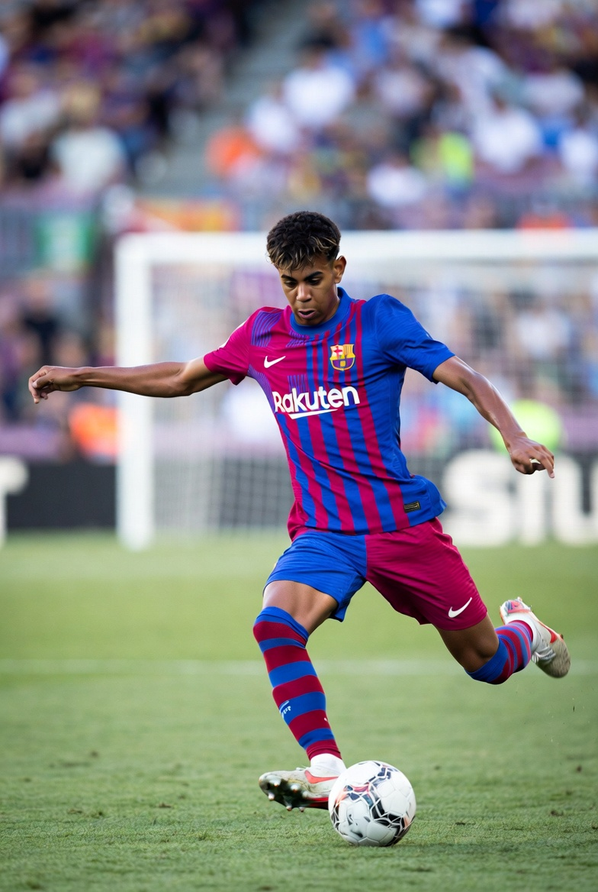
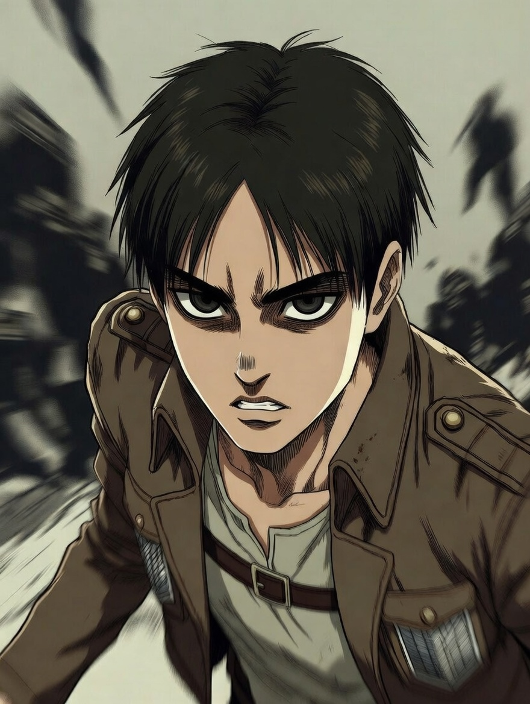

My Interests
Technology & Cybersecurity

Technology is not just a field of study for me — it is a long-term commitment. I am deeply interested in cybersecurity, network systems, and understanding how digital infrastructures are protected from modern threats.
I enjoy learning how vulnerabilities are discovered, how attacks are prevented, and how ethical hacking plays a role in strengthening systems. The complexity of cybersecurity challenges motivates me to continuously improve my analytical thinking and problem-solving skills.
Fitness & Mental Discipline
Fitness represents discipline and mental toughness in my life. I am inspired by David Goggins and his mindset of pushing beyond limits. His philosophy of embracing discomfort changed the way I approach both physical training and academic challenges.
Working out consistently builds structure in my daily life. I believe that mental resilience developed through physical effort translates directly into professional growth and success.
Soccer & Competitive Spirit
Soccer is one of my biggest passions. I admire players like Lionel Messi for his vision, discipline, and consistency over many years at FC Barcelona. His leadership and humility demonstrate that greatness is built through daily improvement.
I also closely follow rising talent like Lamine Yamal, whose confidence, creativity, and composure at such a young age show the importance of preparation and belief. Watching Barcelona play reinforces my love for teamwork and strategic thinking.
Anime & Storytelling
I enjoy anime because of its strong character development and complex moral themes. One character that stands out to me is Eren Yeager from Attack on Titan.
Eren’s willingness to fight for freedom and protect those he cares about highlights themes of sacrifice, loyalty, and conviction. The depth of the storyline shows how perspective shapes decisions and how difficult leadership choices can be.
Travel & Cultural Growth
Traveling and experiencing different cultures expands perspective. Exposure to new environments strengthens adaptability and communication. I value multicultural awareness and being able to connect with people from diverse backgrounds.
Learning from different cultures strengthens my worldview and helps me grow both personally and professionally.